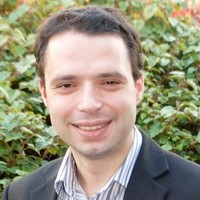
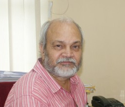

EMINENT SPEAKERS

Prof. Kim.Yong Hoon
GwangJu Institute of Science & Technology (GIST), South Korea
CURRENT DESIGNATION
Professor at GwangJu Institute of Science & Technology (GIST), South Korea
RESEARCH/TEACHING INTERESTS
Sensor System Laboratory (SSL), (Millimeter-wave and Photonics) in the mechatronics department at the GwangJu Institute of Science & Technology (GIST), South Korea. SSL was established in 1995 with Prof. Yong-Hoon Kim. SSL performs research on millimeter-wave technology and development of systems for various vehicles, aircraft and intelligent structures. The major research area includes Microwave and Millimeter-wave circuits, Antennas , Radar sensor system for ITS (Intelligent Transport Systems), Remote sensing, Communication system, etc

Prof. K. Chidananda Gowda
Ph.D IISc, Bangalore
Former Vice-Chancellor of the Kuvempu University
Visiting Professor INRIA, France
RESEARCH/TEACHING INTERESTS
Prof. Chidananda Gowda joined the Sri Jayachamarajendra College of Engineering in Mysore as a Professor in the Computer sciencedepartment and later went on to head the department. He also served as the Vice Principal of the College for about 5 years and later as the Principal for about 1.5 years. He was also a visiting professor at INRIA. He was appointed as the Vice-Chancellor of the Kuvempu University of 18 January 2002, a post which he held till 19 January 2006. He has chaired technical conferences at Zurich, Paris, Tokyo and Luxembourg. He is currently a Distinguished Professor of Computer Science at the International School of Information Management, University of Mysore, Mysore. Many also refer to him as the father of Symbolic Data Analysis in the English speaking world.

Dr. Eur. Ing. Inġ. Brian Azzopardi
PhD PGCHE BEng(Hons) CertFE
CURRENT DESIGNATION
Senior Lecturer II* at Institute of Engineering and Transport, Electrical and Electronics Engineering
Malta College of Arts, Science and Technology (MCAST), Malta
RESEARCH/TEACHING INTERESTS
Brian Azzopardi is Senior Lecturer II at the Malta College of Arts, Science and Technology (MCAST). Since 2011, he was appointed as a senior faculty member and retained visiting status at Oxford Brookes University and Kaunas University of Technology. He has worked for Enemalta Corporation on the development and operations of the high voltage network, and as Consultant on award-winning, first-time implemented projects in the energy field. His publications have been widely cited internationally.
Dr. Eur. Ing. Inġ. Brian Azzopardi
PhD PGCHE BEng(Hons) CertFE
CURRENT DESIGNATION
Senior Lecturer II* at Institute of Engineering and Transport, Electrical and Electronics Engineering
Malta College of Arts, Science and Technology (MCAST), Malta
RESEARCH/TEACHING INTERESTS
Brian Azzopardi is Senior Lecturer II at the Malta College of Arts, Science and Technology (MCAST). Since 2011, he was appointed as a senior faculty member and retained visiting status at Oxford Brookes University and Kaunas University of Technology. He has worked for Enemalta Corporation on the development and operations of the high voltage network, and as Consultant on award-winning, first-time implemented projects in the energy field. His publications have been widely cited internationally.

Dr. Sanjeet Dwivedi
Fellow IET(UK), SMIEEE, Ph.D
CURRENT DESIGNATION
Scrum Master, Agile Mindset R&D Professional at Danfoss Power Electronics A/S, Denmark, Sønderborg, Southern Region, Denmark
RESEARCH/TEACHING INTERESTS
RESEARCH/TEACHING INTERESTS Dr. Sanjeet lives in Graasten (Denmark) and is working as Senior R&D Control Engineer in Danfoss Power Electronics A/S. He did his Ph.D. in field of power electronics and drives at Indian Institute of Technology New Delhi and M.Sc. Engineering in Innovation and Business from SDU, Denmark. He has conducted Danfoss sponsored joint research at Aalborg University, Denmark Technical University and currently associated as adjunct professor with Curtin University Perth. Sanjeet is winner of 9th Man on the Moon Global Innovation Competition of Danfoss and has authored more than 30 scientific publications including three patents in motor control technology. He is an IEEE Senior Member, IES member & Technical Editor of TMech and Associate Editor of TIE.

Prof. Uma Shanker Tiwary
Ph.D
CURRENT DESIGNATION
Professor, Indian Institute of Information Technology, Allahabad
RESEARCH/TEACHING INTERESTS
RESEARCH/TEACHING INTERESTS Uma Shanker Tiwary is a professor associated to department of Information Technology at Indian Institute of Information Technology, Allahabad, India, since 23 Dec 2006. In 1991, he completed his PhD. at department of Electronics Engg. in Institute of Technology, B.H.U. Varanasi, India. He worked as Lecturer in the department of Electronics & Communication, J. K. Institute of Applied Physics & Technology, University of Allahabad from Sept.1988 to March 1992. From march 1992 to June 2002, he was a Reader in Computer Science at J. K. Institute of Applied Physics & Technology, University of Allahabad. He was also a visiting scientist in the department of Computer Science and Engg. at IIT Kanpur from Dec. 1995 to July 1996. He worked as Associate Professor, Indian Institute of Information Technology, Allahabad, India, from July 2002 to 22 Dec 2006. He is holding the research and teaching experience for more than 30 years in which he is very much involved in: Image Processing, Computer Vision, Medical Image Processing, Pattern Recognition & Script Analysis, Digital Signal Processing, Speech and Language Processing, Wavelet Transform, Soft Computing & Fuzzy Logic, Neuro–computing and Soft-computers, Speech driven computers, Natural Language Processing, Brain Simulation, Cognitive Science. He is also a part of the steering committee of International Conference on Intelligent Human Computer Interaction.
Prof. Uma Shanker Tiwary
Ph.D
CURRENT DESIGNATION
Professor, Indian Institute of Information Technology, Allahabad
RESEARCH/TEACHING INTERESTS
RESEARCH/TEACHING INTERESTS Uma Shanker Tiwary is a professor associated to department of Information Technology at Indian Institute of Information Technology, Allahabad, India, since 23 Dec 2006. In 1991, he completed his PhD. at department of Electronics Engg. in Institute of Technology, B.H.U. Varanasi, India. He worked as Lecturer in the department of Electronics & Communication, J. K. Institute of Applied Physics & Technology, University of Allahabad from Sept.1988 to March 1992. From march 1992 to June 2002, he was a Reader in Computer Science at J. K. Institute of Applied Physics & Technology, University of Allahabad. He was also a visiting scientist in the department of Computer Science and Engg. at IIT Kanpur from Dec. 1995 to July 1996. He worked as Associate Professor, Indian Institute of Information Technology, Allahabad, India, from July 2002 to 22 Dec 2006. He is holding the research and teaching experience for more than 30 years in which he is very much involved in: Image Processing, Computer Vision, Medical Image Processing, Pattern Recognition & Script Analysis, Digital Signal Processing, Speech and Language Processing, Wavelet Transform, Soft Computing & Fuzzy Logic, Neuro–computing and Soft-computers, Speech driven computers, Natural Language Processing, Brain Simulation, Cognitive Science. He is also a part of the steering committee of International Conference on Intelligent Human Computer Interaction.